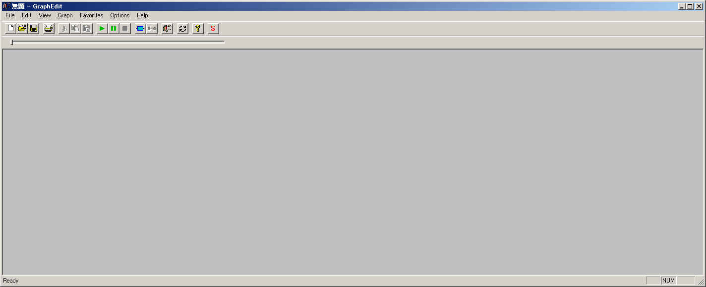
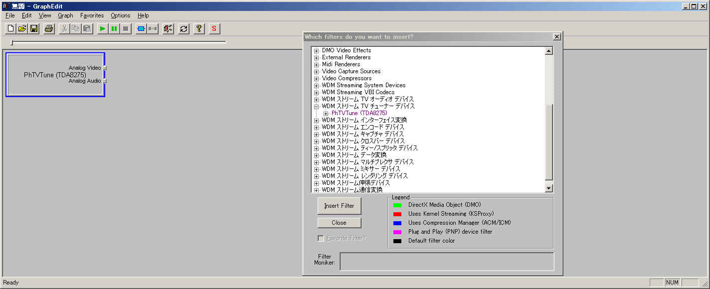
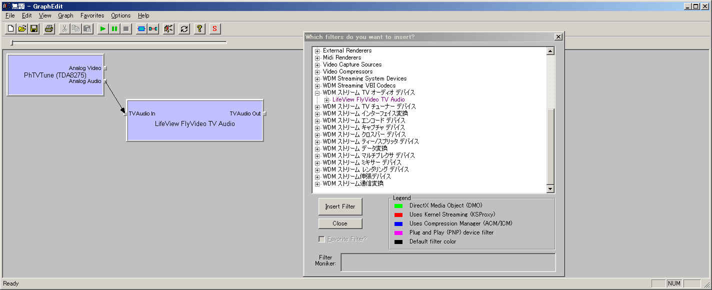
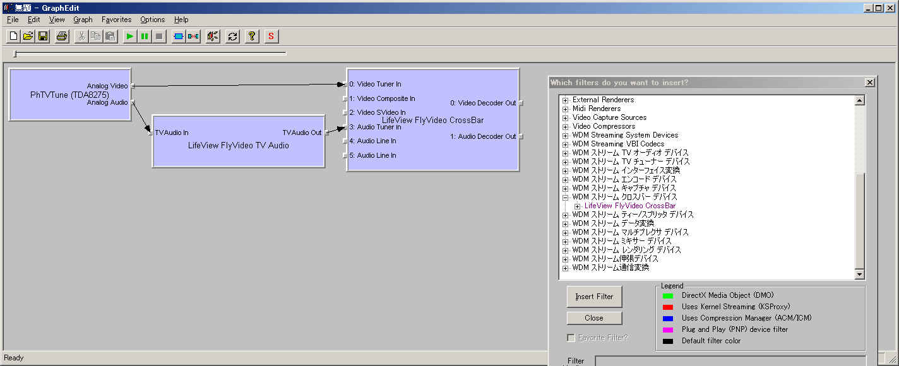
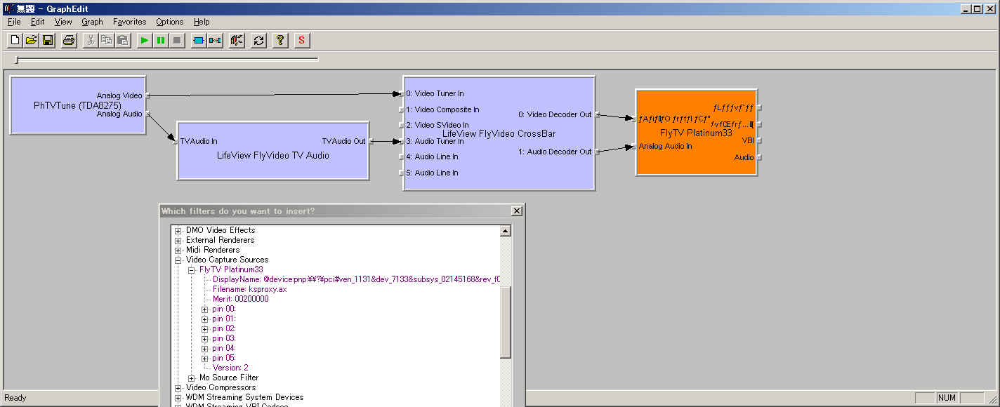
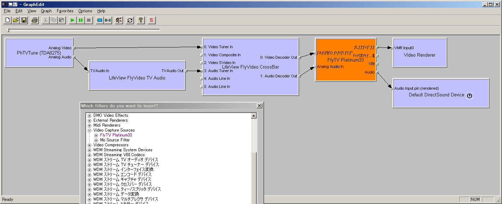
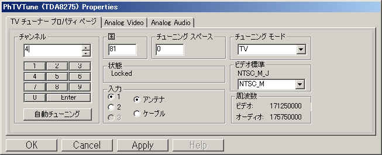
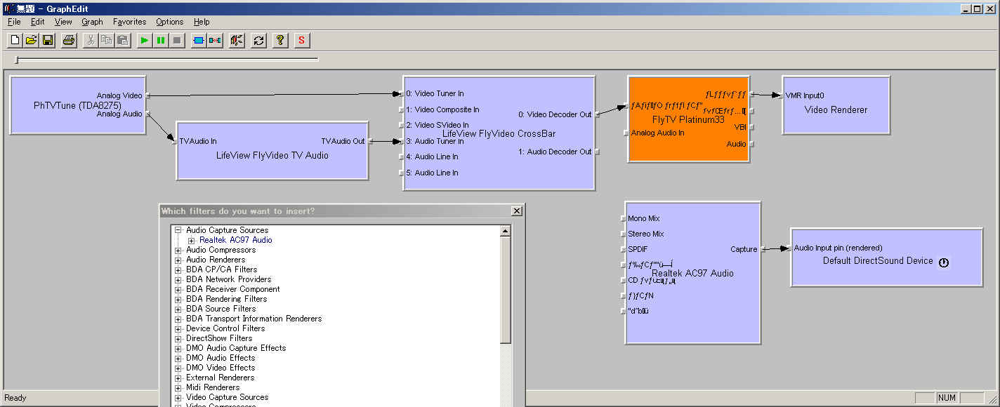
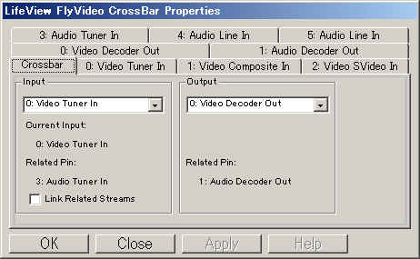
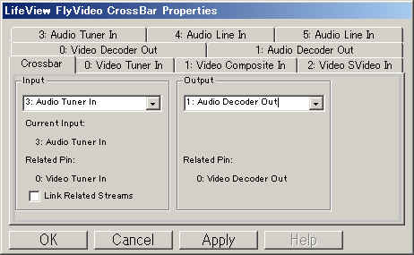

DirectShow関係
８． TV表示
DirectShowでTVを表示する方法を紹介します。
８．1 TV表示のグラフ
◎グラフの生成
TV番組を表示するためのグラフはちょっと複雑になります。
また使用するハードウェア(チューナー付キャプチャカード)によって構成は変わりますので
ここで紹介するグラフは絶対のものではありません。
私も幾つかのキャプチャカードを使ってきましたが、
ピンの名称や数(種類)、プロパティページの内容など結構違いますね。
繰り返しますがここで紹介する手順は絶対ではありません。
説明も「こうしろ」みたいに偉そうに書いてますが、はっきり言って自信はないです（＾＾；
（情報が少ないよ〜）
ちなみに私が現在使用しているキャプチャカードは株式会社ノバック様の「PRIME
TV 7135」です。
（私の経験では「PRIMEシリーズはドライバが比較的しっかりしてる」という
根拠のない理由があるのですが、これはシリコンチューナユニットが気になったので買ったものですｗ）
なお今回のはアンテナ入力のごく普通のTV表示を行う場合のものです。
では、例によってGraphEditを使って、TV表示のグラフを作る手順(の例)を紹介します。

グラフは分かりやすいように上流から順に作っていきます。

まず必要になるのが「TVチューナーフィルタ」です。
これは「WDM ストリーム TV チューナー デバイス」カテゴリあたりにあります。
同軸ケーブルから入ってきたアンテナ信号は全ての番組の信号が混ざり合ってます。
TVチューナーフィルタはこの中から目的の周波数(TVチャンネル)の信号を取り出します。
またビデオ信号とオーディオ信号に分離します。

TVチューナーフィルタから得られたオーディオ信号から
ステレオ/モノラルや主音声/副音声などを選択するのが
「TVオーディオフィルタ」です。
これは「WDM ストリーム TV オーディオ デバイス」あたりにあります。

次に必要になるのが「(アナログビデオ)クロスバーフィルタ」です。
これはアンテナ入力/ビデオ(コンポジット)入力/S-Video入力などを選択します。
アンテナからの入力のみを行う場合もとりあえず必要です。
(逆にビデオ入力のみを考えるならチューナーフィルタ類は不要で、
このクロスバーフィルタから考えることになります。)

次にやっと「キャプチャフィルタ」が来ます。
これはUSBカメラのキャプチャフィルタと同様に
「Video Capture Sources」カテゴリに普通あります。
キャプチャフィルタだけでもTV番組をキャプチャすることは出来ます。
しかしチャンネル(番組)を変えるには、
その前段として上で説明したようなチューナーやクロスバーが必要になる訳です。
（ハードウェアによってはキャプチャフィルタにチューナー機能が入っているものもあるかも。）

キャプチャフィルタの先にはいつも通りのビデオ/オーディオレンダラがつながります。
以上のフィルタを上記のように接続することでTV映像を表示するグラフになります。
このままグラフ再生すると、多分最後に見ていたチャンネルが表示されるでしょう。
チャンネルはTVキャプチャフィルタのプロパティで変更できます。

TVチューナーフィルタで右クリックし「Filter Properties」を選ぶと
上記のようなプロパティページが表示されます。
左側のチャンネルでチャンネルを選びます。（Enterボタンで決定）
中央下の「入力」が「ケーブル」になってると
ケーブルTV用のチューニングになってしまいますので、
アンテナからの地上波なら「アンテナ」を選択しましょう。
(でもケーブルになっててもTVがでるのもある^^;）
またハードウェアによっては「チューニングモード」で選択することにより
FMラジオなども選択できます。（見たことはないですｗ）
カードによってはキャプチャフィルタにオーディオの入力がないものもあります。
（今の奴のひとつ前に使っていた玄人思考のカードはそうでした）
そういうカードの場合、音声は普通の音声キャプチャのようにとりこむことになります。

上記のようなつながりで「Audio Capture Soureces」カテゴリ内のフィルタを使って音声を取り込みます。
(これでなきゃダメってことはないです）
以上のようなグラフでTV画像が出ない場合は、クロスバーの設定が必要かもしれません。


クロスバーフィルタのプロパティを表示すると上記のようなプロパティページが開きます。
ここで出力にどの入力を入れるかを選択します。
ここで「入力」といっているのは、「アンテナ入力」「ビデオ入力」「S入力」といった信号の種類です。
はじめに「Output」のコンボボックスで出力を選択し、
次に「Input」のコンボボックスで入力を選択します。
普通出力はビデオとオーディオの2本がありますので、それぞれ選びます。
以上がDirectShowを用いてTVを表示する方法になります。
初めにも書きましたが、今まで個人的に３枚ぐらいキャプチャカードを買って、
仕事のやつとかを含めると7,8枚ぐらいのキャプチャカードを見てきましたが、
使い方に結構違いがあります。
ちゃんとピンのメディアタイプを見ていけば接続する方法はわかるのですが、
これを自動的にやるのは困難ですね。
あとDirectShowで扱えないキャプチャカードもあります。大昔のやつではありません。
つい最近(2004)発売されたカードでも専用のソフトでしか扱えないものがあります。
(有名なやつの安価版だったりします）
自分で色々やりたいって人は安価なやつは選ばん方がいいですね。